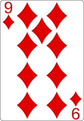
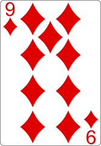

html5 snippet
<!-- load the cards - they are actually loaded on one on top
of each other - see the css code in the -rotate.css-
file to see each cards intial position. -->
<article id="main-stage">
<img id="card01" class="cards" src="ace-of-hearts.png">
<img id="card02" class="cards" src="2-of-hearts.png">
<img id="card03" class="cards" src="3-of-hearts.png">
...
<img id="card52" class="cards" src="ace-of-spades.png">s
<img id="redback" class="cards" src="red-back.png">s
</article>
css3 snippet
/* the -.cards- class puts all the cards one on top of
each other, with a implied angle of -0deg- to start */
.cards {
position: absolute;
left: 367px;
top: 80px;
transform-origin: bottom center;
transition: 2s ease-out 1s;
}
/* when hovering, fan out the cards */
article:hover #card01 { transform: rotate(24deg); }


 
